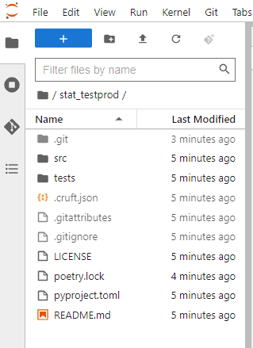
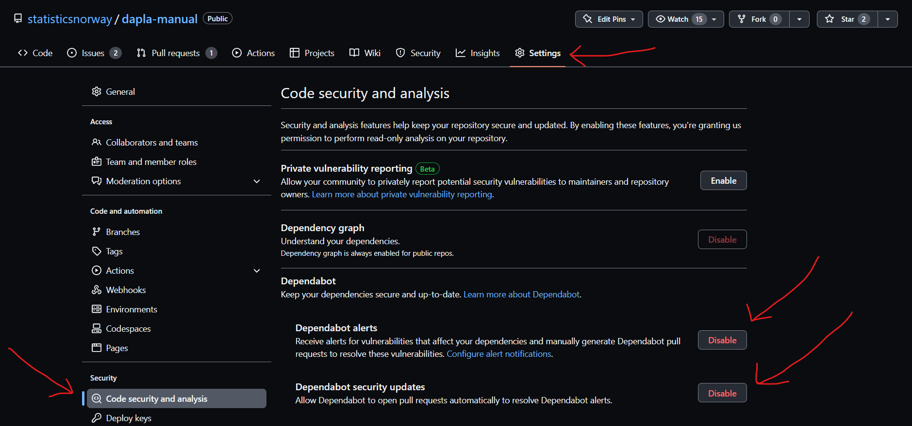

Jobbe med kode
På Dapla jobber vi med utvikling av Python- og R-kode i et Jupyter-miljø. For de som ønsker det, er det mulig å enkelt åpne en notebook med en av våre forhåndskonfigurerte kernels1. Man kan umiddelbart begynne å skrive kode og deretter lagre den i det lokale filsystemet. Dette er ideelt for enkel datautforskning eller for pedagogiske formål.
Når koden skal settes i produksjon, er det essensielt å ta hensyn til følgende:
- Resultater bør være reproduserbare.
- Koden må kunne deles med andre.
- Koden bør være organisert slik at den er gjenkjennelig for kollegaer.
For å lette etterlevelsen av beste praksis for kodeutvikling på Dapla, har vi utviklet et verktøy kalt ssb-project. Dette er et CLI-verktøy2 som enkelt lar deg opprette et prosjekt med en standard mappestruktur, et virtuelt miljø og integrasjon med Git for versjonshåndtering. Som en bonus kan det også opprette et GitHub-repositorium for deg ved behov.
I dette kapitlet vil vi veilede deg gjennom bruken av ssb-project. Du vil lære å opprette et nytt prosjekt, installere pakker, håndtere versjoner med Git, bygge et eksisterende prosjekt og vedlikeholde prosjektet over tid.
Per nå støtter SSB-project kun prosjekter skrevet i Python. Dette skyldes begrensninger ved det populære virtuelle miljø-verktøyet for R, renv. Mens renv effektivt håndterer versjoner av R-pakker, har det ikke kapasitet til å ta vare på spesifikke R-installasjonsversjoner. Dette kan potensielt gjøre det mer utfordrende å reprodusere tidligere publiserte resultater ved bruk av ssb-project. Vi arbeider mot en løsning for å inkludere støtte for R i fremtiden.
SSB-project
SSB-project er et verktøy som hjelper deg med følgende:
- versjonshåndtere kode med Git
- opprette et GitHub-repo
- opprette et virtuelt miljø som husker hvilke versjoner av pakker og programmeringsspråk du brukte
- opprette en Jupyter kernel som kan brukes i Jupyterlab
- konfigurere prosjektet til å passe med enten prodsonen eller Dapla.
Vi mener at ssb-project er et naturlig sted å starte når man skal bygge opp koden i Python eller R. Det gjelder både på bakken og på sky. I denne delen av kapitlet forklarer vi deg hvordan du kan ta i bruk ssb-project.
Kort fortalt kan du kjøre denne kommandoen i en terminal:
ssb-project create stat-testprodDa vil få en mappe som heter stat-testprod med følgende innhold:
- Standard mappestruktur En standard mappestruktur gjør det lettere å dele og samarbeide om kode, som igjen reduserer sårbarheten knyttet til at få personer kjenner koden.
- Virtuelt miljø Virtuelle miljøer isolerer og lagrer informasjon knyttet til kode. For eksempel hvilken versjon av Python du bruker og tilhørende pakkeversjoner. Det er viktig for at publiserte tall skal være reproduserbare. Verktøyet for å lage virtuelt miljø er Poetry.
- Versjonshåndtering med Git Initierer versjonshåndtering med Git og legger til SSBs anbefalte .gitignore og .gitattributes. Det sikrer at du ikke versjonhåndterer filer/informasjon som ikke skal versjonshåndteres.
I tillegg lar ssb-project deg opprette et GitHub-repo hvis du ønsker. Hvis du velger å la ssb-project opprette et GitHub-repo for deg, så vil det også sette opp SSBs anbefalte GitHub-oppsett. Det er viktig for at du skal kunne dele koden din med andre i SSB på en sikker måte.
Dokumentasjonen for ssb-project finnes her: https://statisticsnorway.github.io/ssb-project-cli/. Det oppdateres hver gang en ny versjon av ssb-project slippes.
Forberedelser
Før du kan ta i bruk ssb-project så er det et par ting som må være på plass:
- Du må ha konfigurert Git etter SSB sin standard (les mer om hvordan her).
- Hvis du ønsker at ssb-project også skal opprette et GitHub-repo for deg må du også følgende være på plass:
- Du må ha en GitHub-bruker (les hvordan her)
- Skru på 2-faktor autentifisering for GitHub-brukeren din (les hvordan her)
- Være koblet mot SSBs organisasjon statisticsnorway på GitHub (les hvordan her)
- Opprette Personal Access Token (PAT) og godkjenne det for bruk mot statisticsnorway (les hvordan her)
Det er også å anbefale at du lagrer PAT lokalt slik at du ikke trenger å forholde deg til det når jobber med Git og GitHub. Hvis du har alt dette på plass så kan du bare fortsette å følge de neste kapitlene.
Opprett ssb-project
Har du Github bruker? Noe funksjonalitet i ssb-project krever det. Finn ut hvordan ved å lese forrige kapittel.
ssb-project lar deg opprette en prosjekt-mappe med og uten GitHub-repo. La oss ta for oss hver av alternativene.
Uten GitHub-repo
For å opprette et nytt ssb-project uten GitHub-repo gjør du følgende:
Åpne en terminal. De fleste vil gjøre dette i Jupyterlab på bakke eller sky og da kan de bare trykke på det blå ➕-tegnet i Jupyterlab og velge Terminal.
Før vi kjører programmet må vi være obs på at ssb-project vil opprette en ny mappe der vi står. Gå derfor til den mappen du ønsker å ha den nye prosjektmappen. For å opprette et prosjekt som heter stat-testprod så skriver du følgende i terminalen:
ssb-project create stat-testprodHvis du stod i hjemmemappen din på når du skrev inn kommandoen over i terminalen, så har du fått mappestrukturen som vises i Figur 1. 3. Den inneholder følgende :
- .git-mappe som blir opprettet for å versjonshåndtere med Git.
- src-mappe som skal inneholde all koden som utgjør produksjonsløpet.
- tests-mappe som inneholder tester du skriver for koden din.
- LICENCE-fil som skal benyttes for public-repos i SSB.
- poetry.lock-fil som inneholder alle versjoner av Python-pakker som blir brukt.
- pyproject.toml-fil som inneholder informasjon om prosjektet og hvilke pakker som blir brukt.
- README.md-fil som brukes for tekstlig innhold på GitHub-siden for prosjektet.

Med Github-repo
Over så opprettet vi et ssb-project uten å opprette et GitHub-repo. Hvis du ønsker å opprette et GitHub-repo også må du endre kommandoen over til:
ssb-project create stat-testprod --github --github-token='blablabla'Kommandoen over oppretter en mappestruktur slik vi så tidligere, men også et ssb-project som heter stat-testprod med et GitHub-repo med samme navn. Som du ser så må vi da sende med opsjonen --github og PAT med opsjonen --github-token='blablabla'. Repoet i GitHub ser da ut som i Figur 2. Hvis du ønsker å slippe måtte forholde deg til PAT hver gang interagerer med GitHub, kan du følge denne beskrivelsen for å lagre den lokalt. Da kan droppe --github-token='blablabla' fra kommandoen over.

Når du har opprettet et nytt ssb-project, eller bygget et eksisterende prosjekt, så kan det ta rundt 30 sekunder før kernelen viser seg i Jupterlab-launcher. Vær tålmodig!
Installere pakker
Når du har opprettet et ssb-project så kan du installere de python-pakkene du trenger fra PyPI. Men før du installerer en pakke bør gjøre følgende for å sikre deg at du ikke installerer en pakke med skadelig kode:
Søk opp pakken på PyPI.
Sjekk om pakken er et populært/velkjent prosjekt ved å besøke repoet der koden ligger. Antall Stars og Forks på gitHub er en grei indikasjon på dette.
Hvis du er i tvil om pakken er trygg å installere, så kan du spørre kollegaer om de har erfaring med den, eller spørre på en egnet Yammer-kanal i SSB.
Hvis du fortsatt ønsker å installere pakken så anbefaler vi å copy-paste navnet fra PyPi, ikke skrive det inn manuelt når du installerer.
Selve installeringen av pakken gjøres enkelt på følgende måte:
- Åpne en terminal i Jupyterlab.
- Gå inn i prosjektmappen din ved å skrive:
cd <sti til prosjektmappe>- Lag en branch/utviklingsbranch som f.eks. heter install-pandas:
git checkout -b install-pandas- Installer, f.eks. Pandas, ved å skrive følgende:
poetry add pandas
Figur 3 viser hvordan dette vil se ut i en Jupyterlab-terminal. Kommandoen for å installere noe er poetry add etterfulgt av pakkenavnet. Vi ser også at den automatisk legger til Pandas-versjonen i filen poetry.lock.
Du kan også spesifisere en konkret versjon av pakken som skal installeres med følgende kommando:
poetry add pandas@1.2.3Avinstallere pakker
Ofte eksperimenterer man med nye pakker, og alle blir ikke med videre i produksjonskoden. Det er god praksis å fjerne pakker som ikke brukes, blant annet for å unngå at de blir en sikkerhetsrisiko. Det gjør du enkelt ved å skrive følgende i terminalen:
poetry remove pandasOppdatere pakker
Hvis det kommer en ny versjon av en pakke du bruker, så kan du oppdatere den med følgende kommando:
poetry update pandashvis du kjører poetry update uten noe pakkenavn, så vil alle pakkene dine oppdateres til siste versjon, med mindre du har spesifisert versjonsbegrensninger i pyproject.toml-filen.
Undersøk avhengigheter
Hvis du lurer på hvilke pakker som har hvilke avhengigheter, så kan du lett liste ut dette i terminalen med følgende kommando:
poetry show --treeDet vil gi en grafisk fremstilling av avhengighetene som vist i Figur 4.
Push til GitHub
Når du nå har installert en pakke så har filen poetry.lock endret seg. For at dine samarbeidspartnere skal få tilgang til denne endringen i et SSB-project, så må du pushe en ny versjon av poetry.lock-filen opp Github, og kollegaene må pulle ned og bygge prosjektet på nytt. Du kan gjøre dette på følgende måte etter at du har installert en ny pakke:
- Vi kan stage alle endringer med følgende kommando i terminalen når vi står i prosjektmappen:
git add -A- Deretter commite en endring, dvs. ta et stillbilde av koden i dette øyeblikket, ved å skrive følgende:
git commit -m "Installert pandas"- Push det opp til GitHub4. Anta at vi gjorde dette i branchen install-pandas som ble opprettet tidligere. Da kan vi skrive følgende :
git push --set-upstream origin install-pandasDeretter kan kollegaene dine pulle ned endringene og bygge prosjektet på nytt. Vi forklarer hvordan man kan bygge prosjektet på nytt senere i kapitlet.
Dependabot
Når man installerer pakker så vil det etter hvert utvikle seg et sett av potensielt kompliserte avhengigheter mellom disse pakkene. Dette skyldes at en pakke kan benytte seg av funksjonalitet i andre pakker, som igjen benytter seg av funksjonalitet i andre pakker, osv.. Hvis noen finner en sikkerhetssårbarhet i en pakke så kan det fikses ved at en ny versjon av den pakken slippes, som igjen kan få konsekvenser for pakker som er avhengig av denne.
I SSB er det tilrettelagt for at alle som versjonshåndterer koden sin på GitHub kan skanne pakkene sine for sårbarheter og nye versjoner av pakker med Dependabot. Dependabot hjelper oss med å finne og fikse sårbarheter og gamle pakkeversjoner. Dette er spesielt viktig når man installerer sine egne pakker.
Dependabot sjekker med jevne mellomrom om det finnes oppdateringer i pakkene som er listet i din pyproject.toml-fil, og den tilhørende poetry.lock. Hvis det finnes oppdateringer så vil den lage en pull request som du kan godkjenne. Når du godkjenner den så vil den oppdatere poetry.lock-filen og lage en ny commit som du kan pushe til GitHub. Dependabot gir også en sikkerhetsvarslinger hvis det finnes kjente sårbarheter i pakkene du bruker.
Det er anbefalt at alle som installerer sine egne pakker i SSB skrur på Dependabot i sine GitHub-repoer.
Aktivere Dependabot
Du kan aktivere Dependabot ved å gi inn i GitHub-repoet ditt og gjøre følgende:
- Gå inn repoet
- Trykk på Settings for det repoet som vist på Figur 5.

I menyen til venstre velger du Code security and analysis
Under seksjonen Dependabot velger Enable på minst Dependabot alerts og Dependabot security updates, slik som vist i Figur 6.

Når du har gjort dette vil GitHub varsle deg hvis det finnes en kjent sårbarhet i pakkene som benyttes.
Oppdatere pakker
Hvis en av pakkene du bruker kommer med en oppdatering, så vil Dependabot lage en pull request (PR) i GitHub som du kan godkjenne. Dependabot sjekker også om oppdateringen er i konflikt med andre pakker du bruker. Hvis det er tilfellet så vil den lage en pull request som oppdaterer alle pakkene som er i konflikt.
Hvis en av pakkene du bruker har en kjent sikkerhetssårbarhet, så vil Dependabot varsle deg om dette under Security-fanen i GitHub-repoet ditt. Hvis du trykker på View Dependabot alerts så vil du få en oversikt over alle sårbarhetene som er funnet, og hvilken alvorlighetsgrad den har. Hvis du trykker på en av sårbarhetene så vil du få mer informasjon om den, og du kan trykke på Create pull request for å oppdatere pakken.
Som nevnt over kan du enkelt oppdatere pakker fra GitHub ved hjelp av Dependabot. Men det finnes tilfeller der du vil teste om en oppdatering gjør at deler av koden din ikke fungerer lenger. Anta at du bruker en Python-pakken Pandas i koden din, og at du får en pull request fra Dependabot om å oppdatere den fra versjon 1.5 til 2.0. Hvis du ønsker å teste om koden din fortsatt fungerer med den nye versjonen av Pandas, så kan du gjøre dette i Jupyterlab ved å følge ved å lage en branch som f.eks. heter update-pandas. Deretter kan du installere den nye versjonen av Pandas med følgende kommando fra terminalen:
poetry update pandas@2.0Hvis du nå kjører koden din kan du teste om den fortsatt fungerer som forventet. Gjør den ikke det kan du tilpasse koden din og pushe endringene til Github. Deretter kan du godkjenne pull requesten fra Dependabot og merge den. Etter dette kan du slette den PR-en som Dependabot lagde for deg.
Bygg eksisterende ssb-project
Når vi skal samarbeide med andre om kode så gjør vi dette via GitHub. Når du pusher koden din til GitHub, så kan samarbeidspartnere pulle ned koden og jobbe videre med den. Men når de henter ned koden så vil de bare hente ned selve koden, ikke pakker og Python-versjonen som ble brukt. De må installere alt som du hadde installert. I tillegg trenger de en kernel hvis de skal jobbe i Jupyterlab. ssb-project gjør det svært enkelt å bygge opp det du trenger, siden det virtuelle miljøet har all informasjon om hva som trengs.
For at samarbeidspartneren din skal kunne bygge miljøet på nytt, må de ha gjort en minimal konfigurering av Git. Les mer om hvordan du frem for å gjøre dette her.
For å bygge opp et eksisterende miljø gjør du følgende:
- Først må du kopiere prosjektet ned lokalt, eller klone repoet med git-terminologi
git clone https://github.com/statisticsnorway/<prosjektnavn>- Gå inn i mappen du klonet
cd <prosjektnavn>- Skape et virtuelt miljø og installere en tilsvarende Jupyter kernel med
ssb-project buildSlette ssb-project
Det vil være tilfeller hvor man ønsker å slette et ssb-project, enten fordi man ikke trenger koden lenger eller fordi man bare testet litt.
Lokalt
Hvis man jobber med flere prosjekter så kan det fort bli mange Jupyter kerneler hengende igjen. Derfor er det også mulighet å kjøre
ssb-project clean stat-testprodsom sletter Jupyter-kernelen og de installerte pakkene i prosjektet. Hvis du også ønsker å slette selve mappen med kode må du gjøre det manuelt5:
rm -rf ~/stat-testprod/Prosjektmappen over lå direkte i hjemmemappen min og hjemmemappen på Linux kan alltid referes til med et tilda-tegn ~.
Arkiver GitHub-repo
GitHub-repoer som er opprettet under SSB sin organinasjons statisticsnorway på GitHub kan ikke slettes, bare arkiveres. Grunnen er at hvis man oppdager en sårbarhet senere så er det viktig å kunne se repoet for å forstå hva som har skjedd.
Hvis du ikke trenger et GitHub-repo lenger kan man arkivere repoet. Det gjør du på følgende måte:
- Gi inn i repoet Settings slik som vist med rød pil i Figur 7.

- Under General scroller du deg ned til delen som heter Danger Zone og velger Archive this repository, slik som vist på Figur 8.

- I dialogboksen som dukker opp fyller du inn reponavnet som beskrevet og trykker på I understand the consequences, archive this repository.
Når det er gjort så er repoet lesbart, men man kan ikke jobbe med det. Men som vi ser av @#fig-github-repo-settings-archive-warning kan man omgjøre arkiveringen senere hvis det skulle være ønskelig.
Spark i ssb-project
For å kunne bruke Spark i et ssb-project må man først installere pyspark. Det gjør du ved å skrive følgende i en terminal:
poetry add pyspark==$(pip show pyspark | grep Version | egrep -o "([0-9]{1,}\.)+[0-9]{1,}") --no-devHer installerer du samme versjon av pyspark som på Jupyterlab.
Videre kan vi konfigurere Spark til å enten kjøre på lokal maskin eller på flere maskiner (såkalte clusters). Under beskriver vi begge variantene.
Lokal maskin
Oppsettet for Pyspark på lokal maskin er det enkleste å sette opp siden Pyspark vil ha direkte tilgang til det lokale filsystemet. Man kan bruke miljøvariabelen PYSPARK_PYTHON til å peke på det virtuelle miljøet, og dermed vil Pyspark også ha tilgang til alle pakkene som er installert der. I en notebook vil dette kunne settes opp slik:
import os
import subprocess
# Finner filstien til det virtuelle miljøet
python_path = subprocess.run(['poetry', 'run', 'which', 'python'],
capture_output=True, text=True).stdout.rstrip('\n')
os.environ["PYSPARK_PYTHON"] = python_path
os.environ["PYSPARK_SUBMIT_ARGS"] = os.environ["PYSPARK_LOCAL_SUBMIT_ARGS"]Når du oppretter en Notebook og bruker den kernelen du har laget så må du alltid ha denne på toppen av notebooken. Det initialiserer Spark slik at det kan brukes i notebooken.
%run /usr/local/share/jupyter/kernels/pyspark_local/init.pyDette scriptet vil sette et spark objekt som brukes for å kalle API’et til pyspark.
Cluster
Hvis man vil kjøre Pyspark i et cluster (dvs. på flere maskiner) så vil databehandlingen foregå på andre maskiner som ikke har tilgang til det lokale filsystemet. Man må dermed lage en “pakke” av det virtuelle miljøet på lokal maskin og tilgjengeliggjøre dette for alle maskinene i clusteret. For å lage en slik “pakke” kan man bruke et bibliotek som heter venv-pack. Dette kan kjøres fra et terminalvindu slik:
venv-pack -p .venv -o pyspark_venv.tar.gzMerk at kommandoen over må kjøres fra rot-mappen i prosjektet ditt. Her er pyspark_venv.tar.gz et tilfeldig valgt filnavn, men dette filnavnet skal brukes videre i notebooken.
import os
import subprocess
# Miljøvariabel som peker på en utpakket versjon av det virtuelle miljøet
os.environ["PYSPARK_PYTHON"] = "./environment/bin/python"
# Legg til et flagg, --archives, som peker på "pakken" med det virtuelle miljøet
conf = os.environ["PYSPARK_K8S_SUBMIT_ARGS"].split(' ')
last_index = conf.index('pyspark-shell')
conf[last_index:last_index] = ['--archives', 'pyspark_venv.tar.gz#environment']
os.environ["PYSPARK_SUBMIT_ARGS"] = ' '.join(conf)Når du oppretter en Notebook og bruker den kernelen du har laget så må du alltid ha denne på toppen av notebooken. Det initialiserer Spark slik at det kan brukes i notebooken.
%run /usr/local/share/jupyter/kernels/pyspark_k8s/init.pyDette scriptet vil sette et spark objekt som brukes for å kalle API’et til pyspark.
Tips og triks
I denne delen av kapitlet vil vi gi deg noen tips og triks som kan være nyttige når du jobber med ssb-project.
Poetry
ssb-project bruker Poetry for å håndtere virtuelle miljøer. Poetry er et verktøy som gjør det enkelt å installere pakker og håndtere versjoner av disse. Det er også Poetry som håndterer Jupyter-kernelen for deg.
Hvis du etterlyser funksjonalitet i et ssb-project så kan det være nyttig å lese dokumentasjonen til Poetry for å se om det er mulig å få til det du ønsker.
Full disk på Dapla
Det “lokale” filsystemet på Dapla har kun 10GB diskplass. Har du mange virtuelle miljøer på denne disken kan det fort bli fullt, siden alle pakker blir installert her. Vanligvis er det 2 grunner til at disken blir full:
For mange virtuelle miljøer (ssb-projects) lagret lokalt.
Dette vil ofte kunne løses ved å slette virtuelle miljøer som ikke lenger er i bruk. Hvis du har 5 virtuelle miljøer som hver bruker 1GB, og du kun jobber på en av de nå, så vil du frigjøre 40% av disken ved å slette 4 av dem. Husk at det permanente lagringsstedet for kode er på GitHub, og du kan alltid klone ned et prosjekt senere og bygge det hvis det trengs./home/jovyan/.cache/har blitt for stort.
Dette er en mappe som brukes av applikasjoner til å lagre midlertidig data slik at de kan kjøre raskere. Denne kan bli ganske stor etter hvert. Ofte kan man frigjøre flere GB ved å slette denne. Du sletter denne mappen ved å skrive følgende i en terminal:
rm -rf /home/jovyan/.cache/Hvis du opplever at disken er full, så kan det anbefales å undersøke hvilke mapper som tar størst plass med følgende kommando i terminalen:
cd ~ && du -h --max-depth=5 | sort -rh | head -n 10 && cd -Kommandoen over sjekker, fra hjemmemappen din, hvilke mapper og undermapper som tar mest plass. Den viser de 10 største mappene. Hvis du ønsker å se flere mapper så kan du endre tallet etter head -n. Hvis du ønsker å se alle mapper så kan du fjerne head -n. --max-depth=5 betyr at den kun sjekker mapper som er 5 mapper dype fra hjemmemappen din.
Når du har gjort det kan selv vurdere hvilke som kan slettes for å frigjøre plass.
Hold prosjektet oppdatert
Hvis du sitter med en lokal kopi av prosjektet ditt, og flere andre jobber med den samme kodebasen, så er det viktig at du holder din lokale kopi oppdatert. Hvis du jobber i en branch på en lokal kopi, bør du holde denne oppdatert med main-branchen på GitHub. Det er vanlig Git-praksis. Når man også bruker ssb-project, så man huske å også bygge prosjektet på nytt hver gang det er endringer som er gjort av andre i poetry.lock.-filen.
R og renv
Installering av pakker for R-miljøet i Jupyterlab er foreløpig ikke en del av ssb-project enda. Men vi kan bruke renv til dette. renv er et verktøy som lar oss opprette et virtuelt miljø for R og installere pakker. Det er anbefalt å bruke renv for å sikre at alle som jobber med prosjektet har samme versjon av pakkene. I tillegg er det enkelt å dele prosjektet med andre.
Oppretting av renv-miljø og installering av pakker anbefales å gjøres fra terminal. Dette er fordi det trengs å gjøres kun en gang per prosjekt. For å starte R i terminalen i Jupyter/DAPLA:
- Åpne en terminal fra Launcher
- Stå i mappen der du vil aktivere det virtuelle miljøet/installere pakker, dvs prosjekt mappen.
- Starte R ved å skrive in
R
Det vi nå har gjort er å åpne R fra terminalen slik at vi kan skrive R-kode direkte i terminalen. Det omtales ofte som en R Console. I RStudio finne du terminalen i fanen ved siden av “Console”.
Starte en ny renv
For å installere dine egne R-pakker må du opprette et virtuelt miljø med renv. Dette kan gjøres ved å skriver:
renv::init()Kommandoen aktiverer et virtuelt miljø i mappen du står i. Rent praktisk vil det si at du fikk følgende filer/mapper i mappen din:
renv.lock
En fil som inneholder versjoner av alle pakker du benytter i koden din..Rprofile En fil som inneholder informasjon om oppsetting av miljø og alternative.
renv
Mappe som inneholder alle pakkene du installerer.renv/activate.R En fil som aktivere renv miljø for et prosjekt.
Hvis prosjektet ligger på GitHub, skal filene renv.lock, .Rprofile og renv/activate.R være på GitHub.
Installering av pakker
Nå som vi har et virtuelle miljøet på plass kan vi installere R-pakker. På Dapla installeres R-pakker fra en av to steder:
- https://packagemanager.rstudio.com/all/latest
- https://cran.uib.no
Vi installere pakker med funksjonen renv::install():
renv::install("PxWebApiData")Dette installerer pakken PxWebApiData i det virtuelle miljøet. Dette er en pakke skrevet for å hente ut data fra SSBs statistikkbank.
Det er også mulig å installere pakker som ligger på SSBs GitHub. Da må vi spesifisere at pakke ligger på ‘statisticsnorway’ område. For eksempel:
renv::install("statisticsnorway/klassR")Pakken klassR er skrevet for å hente ut klassifikasjoner fra SSBs KLASS. Det er en public repository på Github og åpen for alle å laste ned.
Hvis prosjekt er opprettet av noen andre, og har blitt delt med deg, kan alle pakkene i prosjektet installeres ved:
renv:restore()Hvis du selv har ikke benyttet renv i prosjektet tidligere må du kjøre renv::init() på forhånd.
Lagre pakkeversjonen til renv
For å lagre pakkeversjon til .lockfil må koden din benytte pakken ved funksjonen library() et sted i prosjektet (på en .R fil). For eksempel kan vi benytte pakken PxWebApiData i koden vår ved:
library(PxWebApiData)
ApiData("https://data.ssb.no/api/v0/en/table/04861",
Region = c("1103", "0301"), ContentsCode = "Bosatte", Tid = c(1, 2, -2, -1))For å legge pakken inn i .lockfilen skriver vi i R på terminal:
renv::snapshot()Det betyr at både du og andre kan gjennskape de pakkene og versjoner som du har installerte. Kikker du nå inne i renv.lock-filen så ser du nå at verjsonen av PxWebApiData er lagt til. I bildet under ser du hvordan et arbeidsmiljø typisk kan se ut når man installerer sine egne pakker.

Avinstallering
Individuelle pakker kan fjernes fra miljø ved renv::remove()` funksjonen. For eksempel:
renv::remove("PxWebApiData")For å fjerne fra renv.lock-filen også må du ta en snapshot() etterpå.
renv::snapshot()En annen nyttig funksjon er renv::clean(). Dette fjerner alle pakker fra library som ikke er i bruk
renv::clean()Igjen må du ta en snapshot() for at endringer skal lagres på renv.lock-filen
Oppgradere pakker
For å oppgradere en pakke kan du bruke renv::update(). For eksempel å oppgradere PxWebApiData skriv:
renv::update("PxWebApiData")For å installere et spesifikk versjon av en pakke kan du spesifisere dette med installering med @ og versjonsnummer. For eksempel å installere PxWEbApiData versjon 0.4.0:
renv::install("PxWebApiData@0.4.0")Husk å ta en snapshot() etterpå for å lagre endringer til renv.lock-filen. Det betyr at du og andre kan gjenskape miljø på nytt.
renv::snapshot()Hva skal stå i kjørekoden?
Koden over kan kjøres fra R i terminal og skal kun kjøres en gang. Men for å aktivere miljø og pakker som skal brukes må det aktiveres ved starten av koden din. I RStudio går dette automatisk ved hjelp av .Rprofile filen. I JupyterLab når du åpne en .R-fil som en notebook må det aktiveres ved for eksempel:
renv::autoload()Deretter kan du benytte pakker og funksjoner ved library() osv. Funkjsonen renv::autoload() vil si ifra at du ønsker å benytte et renv miljø og vil letter etter filene i prosjektetfor å aktivere miljø (både i prosjekt-mappen og i foreldre-mapper).
For å dele koden med andre, må de også kjøre renv::restore() (første gang) for å installere alle pakkene som ligger i .lock filen.
R på bakken
Prosessen med å installere pakker for R på bakken er det samme som på Dapla. Noen pakker (for eksempel devtools) kan foreløpig ikke installeres på bakken på egenhånd pga 3. parti avhengigheter. Vi jobber med å finne en løsning til dette.
For å installere arrow, kopier og kjør følgende kommando i R:
install.packages("/ssb/bruker/felles/R_pakker/arrow_11.0.0.2.tar.gz",
repos = NULL,
type = "source")Fotnoter
En kernel refererer til en Python- eller R-installasjon som er optimalisert for bruk med Jupyterlab Notebooks.↩︎
CLI = Command-Line-Interface, som betyr et program designet for bruk i terminalen med kommandoer.↩︎
Filer og mapper som starter med punktum er skjulte med mindre man ber om å se dem. I Jupyterlab kan disse vises i filutforskeren ved å velge View fra menylinjen, og deretter velge Show hidden files. I en terminal skriver man
ls -afor å se de.↩︎Å pushe til GitHub uten å sende ved Personal Access Token fordrer at du har lagret det lokalt så Git kan finne det. Her et eksempel på hvordan det kan gjøres.↩︎
Dette kan også gjøres ved å høyreklikke på mappen i Jupyterlab sin filutforsker og velge Delete.↩︎